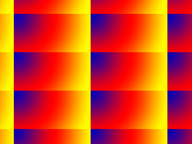

Repeating Textures

Last Updated 10/04/14
In this tutorial we're going to create a scrolling tiling effect by doing some tricks with texture coordinates.From LTexture.cpp
#include "LTexture.h"
#include <IL/il.h>
#include <IL/ilu.h>
GLenum DEFAULT_TEXTURE_WRAP = GL_REPEAT;
In addition to texture filtering, another parameter you can set for your texture is how the textures wraps.
I know I've said in the past that texture coordinates go from 0.0 to 1.0, but this isn't necessarily true. You can give a texture coordinate of 2.0 which will cause the 200% of texture to get mapped. This means the texture will get mapped twice along that axis.
This assumes you have your texture wrap set to GL_REPEAT. This is the default texture wrap when creating an OpenGL texture, and now we're going to be setting it explicitly. At the top of LTexture.cpp, we declare our default texture wrap.
I know I've said in the past that texture coordinates go from 0.0 to 1.0, but this isn't necessarily true. You can give a texture coordinate of 2.0 which will cause the 200% of texture to get mapped. This means the texture will get mapped twice along that axis.
This assumes you have your texture wrap set to GL_REPEAT. This is the default texture wrap when creating an OpenGL texture, and now we're going to be setting it explicitly. At the top of LTexture.cpp, we declare our default texture wrap.
From LTexture.cpp
bool LTexture::loadTextureFromPixels32( GLuint* pixels, GLuint imgWidth, GLuint imgHeight, GLuint texWidth, GLuint texHeight )
{
//Free texture if it exists
freeTexture();
//Get image dimensions
mImageWidth = imgWidth;
mImageHeight = imgHeight;
mTextureWidth = texWidth;
mTextureHeight = texHeight;
//Generate texture ID
glGenTextures( 1, &mTextureID );
//Bind texture ID
glBindTexture( GL_TEXTURE_2D, mTextureID );
//Generate texture
glTexImage2D( GL_TEXTURE_2D, 0, GL_RGBA, mTextureWidth, mTextureHeight, 0, GL_RGBA, GL_UNSIGNED_BYTE, pixels );
//Set texture parameters
glTexParameteri( GL_TEXTURE_2D, GL_TEXTURE_MAG_FILTER, GL_LINEAR );
glTexParameteri( GL_TEXTURE_2D, GL_TEXTURE_MIN_FILTER, GL_LINEAR );
glTexParameteri( GL_TEXTURE_2D, GL_TEXTURE_WRAP_S, DEFAULT_TEXTURE_WRAP );
glTexParameteri( GL_TEXTURE_2D, GL_TEXTURE_WRAP_T, DEFAULT_TEXTURE_WRAP );
//Unbind texture
glBindTexture( GL_TEXTURE_2D, NULL );
//Check for error
GLenum error = glGetError();
if( error != GL_NO_ERROR )
{
printf( "Error loading texture from %p pixels! %s\n", pixels, gluErrorString( error ) );
return false;
}
return true;
}
In all our texture loading functions, we set texture wrap using glTexParameter(). We set texture wrap for both the s texture axis and t texture axis.
From LUtil.cpp
//Repeating image
LTexture gRepeatingTexture;
//Texture offset
GLfloat gTexX = 0.f, gTexY = 0.f;
//Texture wrap type
int gTextureWrapType = 0;
At the top of LUtil.cpp we declare a few global variables, the first of which is the texture we're going to tile.
Secondly there's the texture offsets we're going to use to scroll the texture. Lastly, the "gTextureWrapType" which controls how we wrap our texture.
Secondly there's the texture offsets we're going to use to scroll the texture. Lastly, the "gTextureWrapType" which controls how we wrap our texture.
From LUtil.cpp
bool loadMedia()
{
//Load texture
if( !gRepeatingTexture.loadTextureFromFile( "14_repeating_textures/texture.png" ) )
{
printf( "Unable to load repeating texture!\n" );
return false;
}
return true;
}
void update()
{
//Scroll texture
gTexX++;
gTexY++;
//Cap scrolling
if( gTexX >= gRepeatingTexture.textureWidth() )
{
gTexX = 0.f;
}
if( gTexY >= gRepeatingTexture.textureHeight() )
{
gTexY = 0.f;
}
}
As usual, loadMedia() loads our texture. This time the function update() updates our texture offset so our texture scrolls. We also cap the scrolling so every time the texture
goes too far, the respective coordinate resets allowing our scrolling to loop.
From LUtil.cpp
void render()
{
//Clear color buffer
glClear( GL_COLOR_BUFFER_BIT );
//Calculate texture maxima
GLfloat textureRight = (GLfloat)SCREEN_WIDTH / (GLfloat)gRepeatingTexture.textureWidth();
GLfloat textureBottom = (GLfloat)SCREEN_HEIGHT / (GLfloat)gRepeatingTexture.textureHeight();
In render() after we clear the color buffer, we calculate the texture coordinates for the bottom right corner of the quad.
Let's say the texture is 128 pixels wide and the screen is 256 pixels wide. What this would do is calculate the right coordinate as 256 / 128, or 2.0. So the texture would be mapped 2 times along the x/s axis. Then we do the same for the y/t axis.
Let's say the texture is 128 pixels wide and the screen is 256 pixels wide. What this would do is calculate the right coordinate as 256 / 128, or 2.0. So the texture would be mapped 2 times along the x/s axis. Then we do the same for the y/t axis.
From LUtil.cpp
//Use repeating texture
glBindTexture( GL_TEXTURE_2D, gRepeatingTexture.getTextureID() );
//Switch to texture matrix
glMatrixMode( GL_TEXTURE );
//Reset transformation
glLoadIdentity();
Now we want to use the texture we loaded so we bind it using glBindTexture(). Then we set the current matrix to be the texture matrix with glMatrixMode(). The texture matrix can
be used to transform texture coordinates much in the same way the modelview matrix can be used to transform vertex coordinates. Here we initialize the texture matrix to the
identity matrix.
From LUtil.cpp
//Scroll texture
glTranslatef( gTexX / gRepeatingTexture.textureWidth(), gTexY / gRepeatingTexture.textureHeight(), 0.f );
//Render
glBegin( GL_QUADS );
glTexCoord2f( 0.f, 0.f ); glVertex2f( 0.f, 0.f );
glTexCoord2f( textureRight, 0.f ); glVertex2f( SCREEN_WIDTH, 0.f );
glTexCoord2f( textureRight, textureBottom ); glVertex2f( SCREEN_WIDTH, SCREEN_HEIGHT );
glTexCoord2f( 0.f, textureBottom ); glVertex2f( 0.f, SCREEN_HEIGHT );
glEnd();
//Update screen
glutSwapBuffers();
}
After initializing the texture matrix, we translate to the texture offset. Remembering that 1 equals one texture length and not one pixel, we divide each texture offset by the
length of the texture.
Then finally we render a quad with the transformed texture coordinates.
Then finally we render a quad with the transformed texture coordinates.
From LUtil.cpp
void handleKeys( unsigned char key, int x, int y )
{
//If q is pressed
if( key == 'q' )
{
//Cycle through texture reptetitions
gTextureWrapType++;
if( gTextureWrapType >= 2 )
{
gTextureWrapType = 0;
}
//Set texture repetition
glBindTexture( GL_TEXTURE_2D, gRepeatingTexture.getTextureID() );
switch( gTextureWrapType )
{
case 0:
glTexParameteri( GL_TEXTURE_2D, GL_TEXTURE_WRAP_S, GL_REPEAT );
glTexParameteri( GL_TEXTURE_2D, GL_TEXTURE_WRAP_T, GL_REPEAT );
printf( "%d: GL_REPEAT\n", gTextureWrapType );
break;
case 1:
glTexParameteri( GL_TEXTURE_2D, GL_TEXTURE_WRAP_S, GL_CLAMP );
glTexParameteri( GL_TEXTURE_2D, GL_TEXTURE_WRAP_T, GL_CLAMP );
printf( "%d: GL_CLAMP\n", gTextureWrapType );
break;
}
}
}
Finally when the user presses q, the texture's wrap toggles between GL_REPEAT and GL_CLAMP. If the texture's wrap is GL_REPEAT, when it encounters a texture coordinate beyond
0.0 and 1.0 it will just continue mapping the texture and repeat. If the texture's wrap is GL_CLAMP, the texture mapping will stop beyond 0.0 and 1.0.